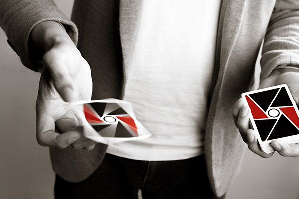
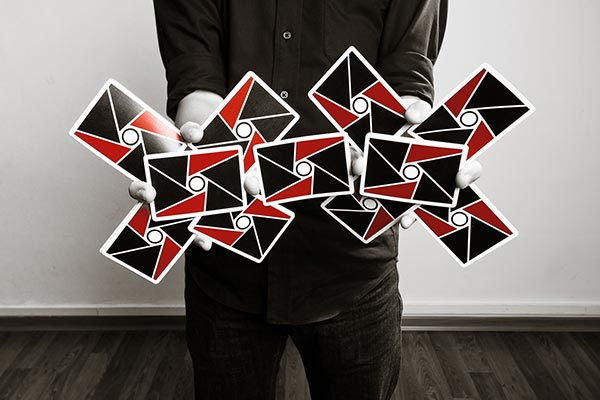
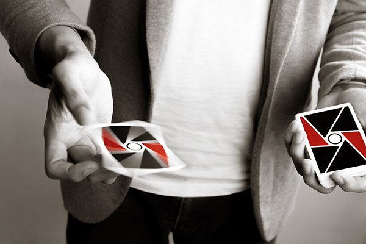
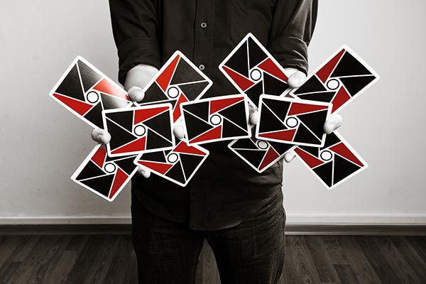

Welcome To Cardistry~!
A Site Especially Devoted To Cards

What is Cardistry?
Many decks of cards are used for magic and/or games. Cardistry is different. Cardistry brings out the potential of cards and its user. Cardistry is the non-magical manipulation of playing cards with intent to display creativity, performance art, and skill.

 
